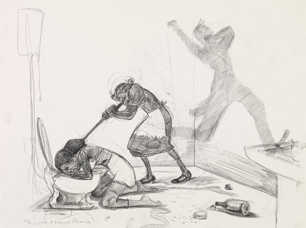

-
The Silhouette Thing
by Ray Hainer May 15, 2011
Lord knows Kara Walker‘s tried to keep her silhouettes fresh. In the seventeen years since her first panoramic mural was unveiled to acclaim she has hustled her cut-paper figures through a long series of guises and repetitions. She has pasted them over watercolors and historical engravings of the Civil War; she has bathed them in washes of color using cut-up gels and overhead projectors; she has deployed them in three dimensions and as puppets in short films; she has swapped black paper for colored. Interesting variations all, but even at their most interesting they never quite shook the mechanical feel of sequels in a franchise.
“At some point, the silhouette thing is going to get really old,” a 28-year-old Walker told a newspaper reporter in 1997. “Right now, I think there are still places I can take it. But eventually I’ll have to move on to something else.”
Eventually may have finally arrived. The concurrent shows of Walker’s new work now on view in Chelsea and on the Lower East Side are steeped as ever in the artist’s signature cocktail of sex, race, and violence, but silhouettes of any kind are largely and conspicuously absent. At Sikkema Jenkins, in the five rooms containing Dust Jackets for the Niggerati — and Supporting Dissertations, Drawings submitted ruefully by Dr. Kara E. Walker, one finds only black-and-white text pieces printed with hand-cut letters and heroic graphite-and-pastel drawings. Meanwhile, at Lehmann Maupin, the psychoanalytically inclined viewer will note with interest that the lone example of the silhouette at either show, the shadow-puppet film Fall Frum Grace, Miss Pipi’s Blue Tale, climaxes with the setting aflame of a silhouette man and a tight zoom on the smoldering paper.

This departure isn’t unprecedented; from the time she discovered the silhouette in graduate school Walker has periodically set down her X-Acto to work through ideas in paint, pencil, or words. And yet something in that tiny immolation seemed to signal a turning away. Walker has hinted at this possibility herself. At a talk at the New School in February in which she discussed her studio practice and the upcoming shows, she spoke of trying to “undo” her early silhouettes and “the entity Kara Walker,” that cagey and sometimes set-upon public figure so bound up with them.
That night she also acknowledged — a bit ruefully, perhaps — the considerable demand for her silhouettes that persists among curators. When, to hear her tell it, she was asked to contribute a mural to a recent group show with a Huckleberry Finn theme in San Francisco, she agreed with all the exasperation and assurance of someone who has grown weary of crying all the way to the bank. “I stopped hanging my head about being the artist who does cut-paper silhouettes,” she said, a bit defensively, in such a way as to suggest that Fall Frum Grace might be read as both an affirmation and a concession.
Backing away from a trademark medium while moving forward in a different direction is a delicate dance for any artist. Though Walker undoubtedly would have found success one way or another, her pornological deconstruction of the antebellum South in silhouette has without a doubt defined her career. Other contemporary artists have picked up the medium (Sherrie Levine, Lari Pittman, Paul Chan and William Kentridge come to mind), but in Walker’s hands it became an unusually rich and insistent medium — one that may prove difficult to quit.
The accountings for this chemistry between artist and medium have become so polished through repeated handlings by critics that they can be easily checked off on one’s fingers. One: By making the stock characters who move through Walker’s work equally black, the silhouette demands both a heightened sensitivity to markers of race and some projection on the part of the viewer, thereby amplifying Walker’s interrogation of racial profiling in all its forms. Two: Walker’s use of the silhouette critiques and co-opts the quasi-racist pseudoscience of physiognomy as practiced by Johann Caspar Lavater, an Enlightenment-era theologian who made extensive use of silhouette portraits in his best-selling treatises. Three: As a minor art historically accessible to amateurs, women, and “maybe a couple of negroes” (as Walker once put it), the silhouette enabled her to explore her agency as a black female artist in the 1990s in a novel and unexpected way. Four: There is something primal and Platonic about shadows that reinforces the psychic overtones of her work.
All four are convincing explanations for the ties binding Walker to the silhouette. A fifth to consider is that the silhouette is, historically, one of the most effective sales tools ever devised.
*
The silhouette has always been a crowd-pleaser. When cut-paper profiles emerged in Europe in the 1700s they quickly caught on as a novelty, a drawing-room pastime. Friends and lovers began to snip each other’s profiles and exchange them like snapshots, and as the fad spread, entrepreneurial artists adopted the technique to meet the growing demand for cheap and ready portraiture. Before long painted silhouettes were also appearing on porcelain, snuffboxes, and jewelry.
In the United States the silhouette proved more popular still. It was imported to the colonies circa 1760 and by the turn of the century itinerant artists were roving the young country, setting up profile-tracing machines in taverns and storefronts and producing tens of thousands of silhouette portraits. “Profiles are seen in nearly every house in the United States of America, never did any invention of making the likeness of men, meet so general approbation as this has done,” artist and museum proprietor Charles Wilson Peale wrote in 1805 to the inventor of a profile machine that had become a featured attraction at his Philadelphia museum.
The invention of photography briefly sidelined the silhouette. After it fell from fashion as a craft and an art form, promoters and salesmen discovered that its visual impact and broad appeal could be harnessed for new ends. Commercial artists in fin-de-siècle Paris began using eye-catching all-black figures in illustrations and promotional posters, and shortly thereafter the silhouette become a textbook technique of the nascent American advertising industry. “Place a single figure, for example, in black against a white background, and it is startling and compelling,” the art director W. Livingston Larned noted in his 1925 primer, Illustration in Advertising. “The silhouette in black has a fascination, particularly when figures are thus represented. … Show only the profile of a face in black silhouette and the observer’s own mind begins instantly to imagine the details.”
Advertisers prized this Rorschach-like invitation-to-projection almost as much as they did the instantaneity of its impact. Above all the silhouette pops. “It’s foremost attribute,” the artist and designer Norman Laliberté has written,
is to telegraph immediately a thought or idea in those areas of modern communications where speed is a prerequisite to understanding. In advertising and marketing the silhouette alone frequently communicates — almost in a flash, as it were — the image of a product, service or situation, and, having achieved the impact of recognition, many times goes on to set the tone for the copy or sales pitch to follow.
The silhouette’s late nineteenth century resurgence was thus one solution to the newfound problem of grabbing consumer attention as it strolls and skims through the clutter of urban life. Likewise, later, as automobiles proliferated and traveling speeds increased, billboard designers turned to the silhouette for its near-subliminal efficiency. The silhouette, like the logo, “does not need to be viewed frontally or with the illusions of the three-dimensional to be recognized,” the historian Catherine Gudis writes in her 2004 book Buyways. “Glimpsed from the corner of one’s eye, through a windshield of a moving car, the image need only flicker for a moment to be perceived. Its outline is what forms an impression, and, advertisers would hope, a lasting one.”
It says something about the abiding wisdom of the market — or the slow evolution of the optic nerve — that the silhouette remains as evergreen as sex sells. Today, silhouettes are practically mandatory on book covers, and they turn up reliably in newspaper and magazine illustrations, in photojournalism, music videos, album covers, and, as always, in advertising. Of late silhouettes have become a fixture of Flash ads for erectile-dysfunction drugs, for-profit colleges, and everything in between, as advertisers try to catch the flighty eyes of online readers amid the tangle and clamor of the Web. Offline, they have figured prominently in campaigns for luxury brands such as Nordstrom, Brahmin, and Louis Vuitton. And, most notably, they were the centerpiece of the once-ubiquitous Apple ads in which the same ambiguity that animates Walker’s silhouettes — Is that dancing woman black or white? — made a point about music and youth and universality that encouraged the mass purchase of iPods.
*
Museums advertise too, and it isn’t surprising that Walker’s silhouettes have shown up on banners, posters, window displays, and print advertisements for exhibitions. Nor is it surprising that her silhouettes have appeared on the cover of magazines including Art News, Artforum, Frieze, and The New Yorker. It isn’t even surprising that in 2008 she designed a billboard for a PSA campaign in South Africa. What is surprising, at first, is how at-home her silhouettes look when abstracted from the gallery and blown up or shrunk down. If anything their power is revealed rather than diminished.
Years ago, an art historian in the process of assailing Walker for her “irresponsible” use of stereotypes observed that “the only good thing about her work is that it Xeroxes well.” She was right about the second part. Unlike paintings or installations, or even photography, Walker’s silhouettes can be reproduced in manifold sizes and settings without the telltale loss of fidelity that would call attention to their status as copies. When transferred to a banner or the pages of a newspaper, her monochrome figures’ crisp outlines and high contrast suppress the distance between artwork and ad, enabling the latter to live, and thrive, on its own terms. One could perhaps disagree about whether these are great artworks, but no one can deny their exceptional design or their quality as copy. In a flash the eye skips to and registers Walker’s images long before the critical faculties kick in, which may be one reason why considerable demand for her silhouettes persists among curators.
It may also be a reason why Walker has continued to make silhouettes even as she appears conflicted about doing so. Graduate schools and group shows are crowded marketplaces, and for nearly two decades the silhouette has helped her stand out. As the art critic Barry Schwabsky has noted, Walker’s early decision to use the silhouette as a vehicle for fierce parodies of Gone With the Wind, Uncle Tom’s Cabin, and other American myths was “the aesthetic equivalent of what marketing gurus call a unique selling proposition.” Unique, and also lasting. As Walker and her art-world partners seem to have independently (and perhaps inadvertently) discovered, the reproducibility and penetration that make her silhouettes so potent as advertisements have extended their mileage and versatility as artworks. The many permutations — murals, films, pop-up books, tapestries — resemble nothing so much as a successful product line. For broad swaths of the museum going public, Walker’s silhouettes are as instantly recognizable as that of Michael Jordan, and they elicit similarly rich associations. Hers might be the strongest brand in the artworld.
It isn’t clear whether the recent silhouette wave in marketing and advertising has been directly inspired by Walker. They are locked in conversation, in any case. Owing to her plentiful exhibitions and media exposure, Walker is by now a household name in certain coveted demographics — the demographic that is likely to see a Nordstrom ad on page two of the New York Times, for one — and the tight bond that exists between the silhouette and the entity Kara Walker is enough to lend a flicker of edginess and prestige to an already dependable advertising strategy. Over and above its baseline connotations, a silhouette is now capable of conjuring high art, gallery openings, iconoclasm, and all the deference and desire those associations can summon in shoppers.
These commercial echoes don’t cheapen Walker’s work, literally or figuratively. When, for instance, ads for Dior lipstick that feature a silhouetted supermodel appear (fortuitously, one imagines) alongside a profile of Walker on the website of W magazine, as happened just last week, a curious synergy arises. As the creator of cut-paper figures that mirror those in the ads, Walker is transformed into an unwitting spokesperson of sorts for Dior; by the same process, in reverse, the presence of the Dior silhouettes testifies obliquely to her status as the undisputed champion of the silhouette and her ingenuity in claiming it as her own.
*
Walker’s next few moves will be especially instructive. If she downplays the silhouette, or leaves it in ashes altogether, as Dust Jackets and Fall Frum Grace suggest she might, what happens next will illuminate the silhouette’s role in the virtuous circle of success, demand, and supply that has marked her career. Then again, if she revives the silhouette it may illuminate the same thing. These circles can be difficult to undo.
The convergence of art, publicity, and advertising embodied by a magazine ad for a Walker exhibition is an old story of course. Generations of artists have sought to expose or hijack that very convergence, and in this, as in her love-hate relationship with the silhouette, it is likely that Walker knows exactly what it is she’s doing. Her work, exhibition titles, and public persona have always contained a carefully calibrated critique of her situation and surroundings — and her teenage idol was, lest we forget, Andy Warhol.
Very few artists have Warhol’s fluency in the gray area where art and commerce combine, however, and even the well-intentioned can often find themselves trapped. Nearly thirty years ago, in an essay about the emerging cohort of post-conceptual artists that included Louise Lawler and Allan McCollum, Hal Foster suggested that it was very much an open question whether strategies like appropriation and institutional critique “subvert the mechanisms of art exhibition, circulation and consumption or play them to the hilt.” Even as these works “delineate the circulation system of art,” Foster continued, the undercurrents of the art world also circulate through them.
The silhouette has a similar tendency to resist appropriation. Silhouette advertising and Walker’s work circle each other coyly, ultimately mingling in a blur on banners and bookshelves. Each derives some of its power from the other, and the silhouette thing circulates freely within and between them, enchaining and electrifying both.